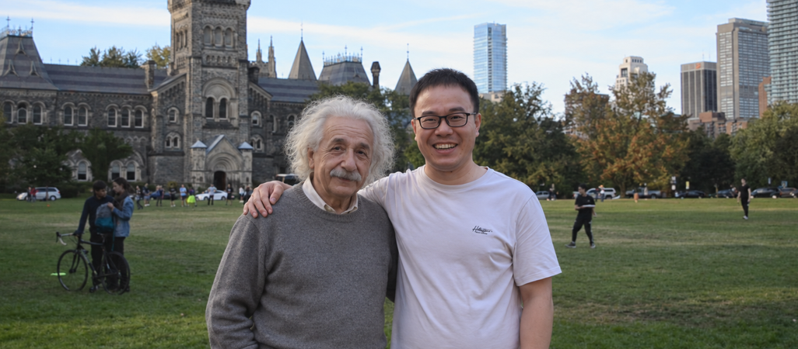

Yu Wu is a professor in the College of Management Science at Chengdu University of Technology. He holds a Ph.D. in Management Science and Engineering from the University of Chinese Academy of Sciences and was a jointly trained doctoral researcher at the University of Toronto. He is a lifetime member of the Operations Research Society of China and a member of the China Computer Federation (CCF). He received his bachelor's, master's, and doctoral degrees from Xi'an Jiaotong University, Aalborg University, and the University of Chinese Academy of Sciences, respectively. He previously served as a Research Associate at the University of Pittsburgh. His research focuses on operations research, optimization, machine-learning theory, and their applications. He has delivered invited talks at academic institutions including the University of Essex. His work has appeared in international and Chinese journals and conferences including COR, FSM, IJSSOL, IEEE T-ITS, JOCO, JITS, APJOR, JORSC, IET ITS, Chinese Journal of Management Science, Computer Science, TAMC, and ASE. In 95% of his publications, he is both the first author and the corresponding author.
My name is shown in bold; * denotes the corresponding author.
Email: wuyu14@mails.ucas.edu.cn
Institutional profile: Chengdu University of Technology Faculty Homepage
